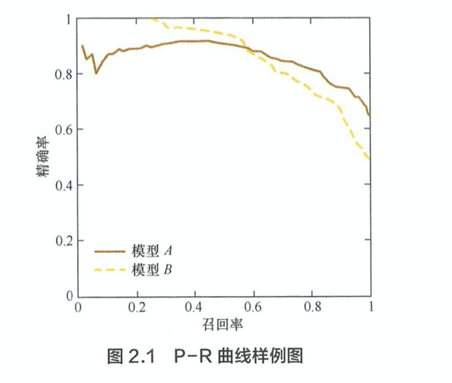
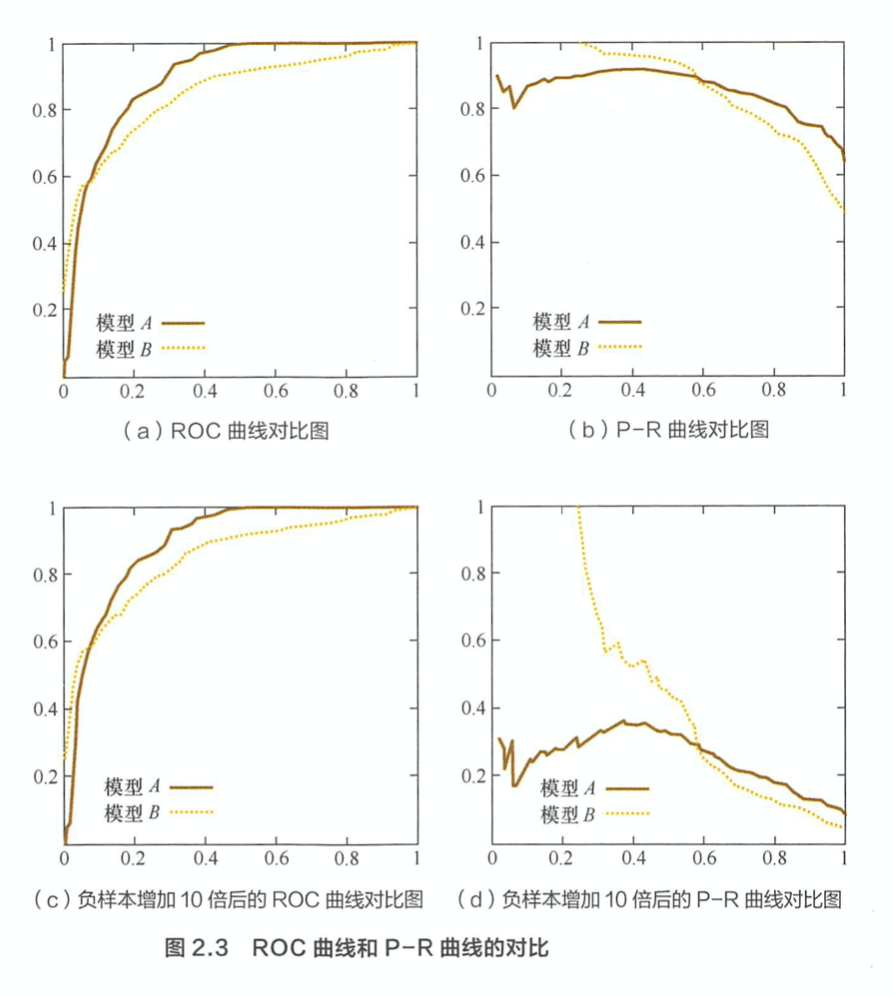

特征工程
为什么需要对数值类型的特征做归一化？ > 常用的归一化有：Min Max Scaler / Z-Score > 当特征的 range 不同时，归一化特征可以加快梯度下降收敛的速度。PCA 等算法的假设有数据是均值均值为0,方差为1.

应该怎样处理类别特征？ > Ordinal Encoding > One-hot Encoding > Binary Encoding
什么是特征组合，如何处理高维组合特征？ > 两个或多个特征组合在一起\((x1,\cdots, xn)\) 等形成组合特征. > 特征选择，矩阵分解，PCA.
怎样有效地找到组合特征 > 1. 决策树从根节点到叶子结点的路径可以看成一种特征组合的方式

Filter, wrapper, embedding 等方法进行特征选择，形成组合特征。
有哪些文本表示模型，它们各自的优缺点是什么？ > Bag of Word, 常用 TF-IDF表示词的权重（term frequency and inverse document frequency）; N-gram. 提取词组; 因为相同的词可能有多种表示，经常会做词干提取word stemming; 主题模型（得到每个主题上词的分布特征）; Word embedding ; Contextual word embeddings
word2vec是如何工作的 > 参考 https://zhangruochi.com/Word-Vectors/2019/12/04/ > CBOW 根据上下文来预测中心词，Skip-gram根据中心词来预测上下文。 CBOW 和 Skip-gram 都是由三层的神经网络组成。输入层为N维 one-hot encoding，隐藏层为 K 维。则输入层和隐藏层的 weight matrix （N*K）就是 embedding vector. word vector 可以由one-hot encoding 与 weight matrix 相乘得到。隐藏层到输出层的weightg matrix 为 （K*N）.输出也是一个N维向量，则可以根据softmax来求每个词的概率，然后应用梯度下降。 > 由于softmax需要对所有词进行遍历，计算量大。此时可以使用negtive sampling 或者 hierarchical softmax.
LSA（Latent Semantic Analysis） 算法是怎样工作的？ > LSA 算法先统计 term-document矩阵（矩阵的每个元素为tf-idf）进行奇异值分解，从而得到term的向量表示和document的向量表示. 其算法的基本流程是： > 1. 分析文档集合，建立词汇-文本矩阵A > 2. 对词汇-文本矩阵进行奇异值分解 > 3. 对SVD分解后的矩阵进行降维 > 4. 使用降维后的矩阵构建潜在语义空间
Glove 是怎样工作的？ > 1. Construct co-occurrence Matrix > 2. Construct relationships between word vectors and co-occurrence Matrix > - Let X denote the word-word co-occurrence matrix, where \(X_{ij}\) indicates the number of times word j occur in the context of word i > - \(w_{i}\),\(\tilde{w_{j}}\) is the word vector > - \(b_i,b_j\) is the bias term > \[w_{i}^{T}\tilde{w_{j}} + b_i + \tilde{b_j} = \log(X_{ij}) \tag{1}\] > 3. Construct loss function: Mean Square Loss > \[J = \sum_{i,j=1}^{V} f(X_{ij})(w_{i}^{T}\tilde{w_{j}} + b_i + \tilde{b_j} – \log(X_{ij}) )^2\] > \[f(x)=\begin{equation} > \begin{cases} > (x/x_{max})^{\alpha} & \text{if} \ x < x_{max} \\ > 1 & \text{otherwise} > \end{cases} > \end{equation}\]
LSA, word2vec, 以及 Glove 的区别于联系？ > LSA和word2vec作为两大类方法的代表，一个是利用了全局特征的矩阵分解方法，一个是利用局部上下文的方法。GloVe模型就是将这两中特征合并到一起的，即使用了语料库的全局统计（overall statistics）特征，也使用了局部的上下文特征（即滑动窗口）。
图像分类时，训练数据不足如何处理。 > 数据不足有过拟合风险，或者模型不能收敛。 > 1. 可以使用降低过拟合风险的措施。如l1/l2,继承学习,dropout 等 > 2. Data augmentation （旋转、平移、缩放、像素扰动、颜色变换、清晰度、对比度等） > 3. Fine tuing or transfer learning > 4. 生成对抗模型生成新样本 > 5. 对图像进行特征提取，使用传统的机器学习模型。
模型评估
准确率的局限性是什么？ > 当正负数据不平衡时会失去意义
Precision 和 Recall 怎样权衡？ > Precision 是指分类正确的正样本/模型预测的正样本, Recall 是指分类正确的正样本/实际的正样本。P-R 曲线横轴是recall，纵轴是precision。P-R 曲线是将阙值从高到低滑动画出的。 > 使用 P-R 曲线来综合判定两个模型的好坏。 F1 和 ROC 也能反应排序模型的好坏。

RMSE 的局限是什么？怎样解决？ > 如果存在个别偏离程度大的异常值，RMSE的效果会很差。 > 1. 数据预处理清理 outlier； > 2. 建模考虑异常机制，如异常点检测； > 3. 使用更合适的指标如 MAPE
什么是 ROC 曲线？ > 横轴是 FPR（FP/N）, 纵轴是 TPR（TP/P）。绘制 ROC 曲线，需要将模型的输出概率从大到小排序，然后动态地选择阈值。

AUC如何计算？ > AUC 是 ROC 曲线下的面积大小，计算时只用沿着ROC 曲线做积分就行了。AUC取值一般在[0.5,1]之间，越大越好。
ROC 曲线相比 P-R 曲线有什么特点 > 当正负样本的分布发生明显变化时，ROC曲线基本不变。因此 ROC 适用的场景更多。如下图是将负样本的数量增加 10 倍之后的结果。

为什么在一些场景中需要使用余弦相似度而不是欧氏距离。 > 余弦相似度只关注向量的夹角，并不关心向量的绝对值大小，范围为[-1,1]。比如在度量两个文本的相似度时，以词频和词向量最为特征。文本越长则欧式距离一定越大，但是余弦相似度则可以保持不变。总的来说，关注相对差异，使用余弦相似度。关注数值绝对差异，使用欧式距离。
如何进行线上 A/B 测试？ > 用户分桶，在分桶过程中一定要保证独立性和采样的无偏性。
为什么在进行了离线评估后还要进行线上评估？ > 1. 离线评估无法完全消除过拟合的影响。 > 2. 离线评估无法完全还原线上的工程环境。 > 3. 线上系统的某些商业指标无法在离线环境中还原，如用户点击率，留存时长等。
模型评估时，有哪些主要的验证方法，他们的优缺点是什么？ > 1. holdout. 在验证集上计算出的评估指标与原始分组有很大的关系。 > 2. k-fold. 把k次评估的平均值作为最终的评估指标。 > 3. 留一法. 每次留下 1 个样本作为验证集。开销大，实际工程中较少使用。 > 4. 自助法. 基于自助采样的方法，对于总数为n的样本集合，进行n次有放回的随机采样，得到大小为n的训练集，没有被采样的样本作为测试集。
超参数有哪些调优方法？ > 1. Grid Search。 十分消耗计算资源和时间，一般先使用较广的搜索范围和较大的步长，或者先确定对模型影响最大的参数。 > 2. 随机搜索。 业界公认的Random search效果会比Grid search好。 例如前面的场景A有2种选择、B有3种、C有5种、连续值随机采样，那么每次分别在A、B、C中随机取值组合成新的超参数组合来训练。虽然有随机因素，但随机搜索可能出现效果特别差、也可能出现效果特别好，在尝试次数和Grid search相同的情况下一般最值会更大，当然variance也更大但这不影响最终结果。 > 3. 贝叶斯优化算法. 是基于数据使用贝叶斯定理估计目标函数的后验分布，然后再根据分布选择下一个采样的超参数组合。它充分利用了前一个采样点的信息，其优化的工作方式是通过对目标函数形状的学习，并找到使结果向全局最大提升的参数
过拟合、欠拟合具体是指什么现象？ > 过拟合是指数据拟合过当，模型在训练集上表现好，但是测试集和新数据上表现差。欠拟合是模型在训练集和测试集上都表现不好。
能否说出集中降低过拟合和欠拟合风险的方法？ > 降低过拟合：获取更多数据、降低模型复杂度、正则化、集成学习 > 降低欠拟合：添加新特征、增加模型负责度、减少正则化系数